No. 1 · Provenance, authenticity and attribution · 27 pages
No. 1 · Provenance, authenticity and attribution · 27 pagesThe Anatomy of Provenance
Methods for tracing ownership and title through European private collections, 1900 to the present
Provenance is more than a list of former owners. This paper treats it as a chain of separate claims, each of which can be tested and each of which may carry different legal consequences depending on where a work was when it changed hands. It explains why provenance and good title are not the same thing, why the location of a work at each sale matters, and how uneven the research records are, especially for Spain after 1945. Drawing on the Drewe, Beltracchi and Knoedler frauds, it offers five questions for every link in the chain, a five-level scale for grading evidence and a checklist to use before buying.
 No. 2 · Provenance, authenticity and attribution · 13 pages
No. 2 · Provenance, authenticity and attribution · 13 pagesNazi-Era Looted Art and Restitution
Principles, national arrangements, landmark cases and due diligence for buyers
Between 1933 and 1945 the Nazi regime confiscated, looted or forced the sale of cultural property on a vast scale, and works with gaps in their history for those years still surface today. This paper explains the international principles, from the 1998 Washington Principles to the 2024 Best Practices, and how claims are now handled in the United Kingdom, Germany, France and the United States, including Germany’s new arbitration body and the permanent US time limit for claims. Three landmark cases, concerning Klimt, the Gurlitt trove and a Pissarro in Madrid, show how long such disputes can run. It closes with practical steps for buyers and owners.
 No. 3 · Provenance, authenticity and attribution · 23 pages
No. 3 · Provenance, authenticity and attribution · 23 pagesThe Catalogue Raisonné Ecosystem
Authority, exclusion, liability and the digital record
For many artists, one publication decides whether a work can be sold at full value. This paper examines the catalogue raisonné: what it contains, who compiles it and how it became the market’s practical test of authenticity. It reviews research suggesting that inclusion carries a substantial price premium, shows how a single expert’s catalogue can move a whole market, and explains why several leading artists’ foundations have stopped authenticating after costly litigation. It compares the legal position of catalogue authors in New York and France, notes that forgeries have entered catalogues, and considers what digital catalogues mean for buyers who need to know which version they are relying on.
 No. 4 · Provenance, authenticity and attribution · 20 pages
No. 4 · Provenance, authenticity and attribution · 20 pagesAttribution: Connoisseurship and Technical Analysis
How attributions are made, tested and relied upon
The same painting can be worth thousands as the work of a follower and millions as the work of a master. This paper explains how attributions are reached from documents, trained connoisseurship and scientific analysis, and how far each can be trusted. It shows what terms such as “attributed to” and “circle of” mean for value and for a buyer’s rights, traces how the accepted number of Rembrandt paintings has risen and fallen, and explains why technical analysis is better at disproving an attribution than proving one. It also considers artificial intelligence and sets out what English law expects of auction houses when experts later disagree.
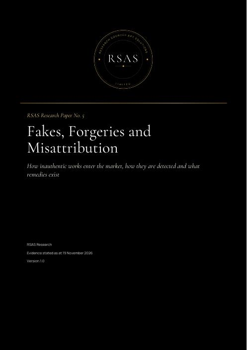
No. 5 · Provenance, authenticity and attribution · 18 pagesFakes, Forgeries and Misattribution
How inauthentic works enter the market, how they are detected and what remedies exist
Every buyer faces the possibility that a work is not what it is said to be, whether through deliberate forgery, later alteration or an honest mistake. This paper examines how such works enter the market, how they are detected and what remedies exist, drawing on the Drewe and Myatt fraud, the Beltracchi forgeries, the Knoedler sales, the Genoa Modigliani exhibition and current proceedings in Paris. It explains why there is no reliable estimate of how many fakes exist, why false stories and documents matter more than skilful painting, and why English sale law protects buyers less than many assume. Provenance research remains the first line of defence.
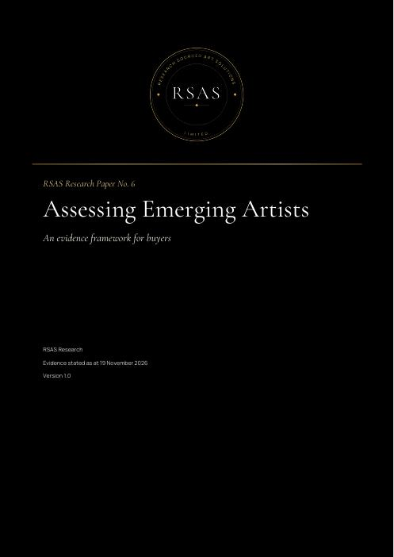
No. 6 · Value, pricing and markets · 18 pagesAssessing Emerging Artists
An evidence framework for buyers
Buying the work of an emerging artist is where enthusiasm most often runs ahead of evidence. Prices are set by galleries, resale records are thin and reputations are still forming. This paper reviews the research on artistic careers, which shows that early access to leading institutions matters greatly and that most artists never develop a resale market. It sets the sharp rise and fall of the ultra-contemporary auction market between 2021 and 2025 against that background. Rather than claiming to predict success, it shows buyers which signals carry weight and how to organise the evidence before committing to a purchase.
 No. 7 · Value, pricing and markets · 26 pages
No. 7 · Value, pricing and markets · 26 pagesComparables and Hedonic Pricing
Valuing unique works of art in thin markets
What is a work of art worth when nothing identical has ever sold? This paper examines the two main answers: the comparable sale, where a specialist adjusts for differences between similar works, and the hedonic model, where statistics estimate what the market pays for each characteristic. It sets these beside repeat-sales analysis, auction estimates and machine learning. It shows that public auctions represent only about a third of sales by value, that models explain market patterns better than single prices, and that unsold works distort the record. It proposes a six-stage method for valuing a work in a thin market and expressing the result as a reasoned range.
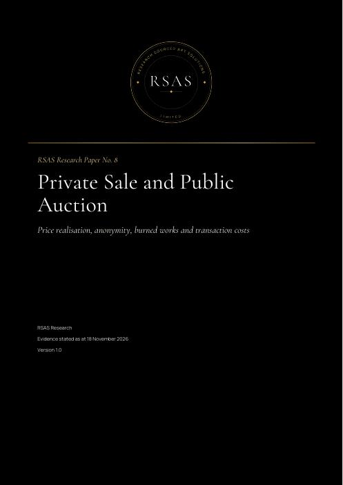
No. 8 · Value, pricing and markets · 27 pagesPrivate Sale and Public Auction
Price realisation, anonymity, burned works and transaction costs
Choosing between auction and private sale is often presented as a matter of temperament. This paper shows that the real differences lie in how a price is discovered, who carries the risk of failure, what each party pays, what becomes public and what remedies exist. It finds no reliable evidence that either route achieves higher prices, measures the gap created by auction buyer’s premiums, and explains guarantees, anonymity and the risk of an intermediary whose role and pay are unclear, as in the Accidia case. It offers a net proceeds model, a framework for choosing a route and a checklist for private sale mandates.
 No. 9 · Value, pricing and markets · 15 pages
No. 9 · Value, pricing and markets · 15 pagesPrimary and Secondary Market Dynamics
How prices are set, allocated and transmitted between the two markets
The art market works as two linked markets. In the primary market, galleries sell new work at prices they set and to buyers they choose; in the secondary market, works are resold through auctions and dealers at prices that can rise or fall in public. This paper explains how the two interact and why their prices can diverge. It shows how waiting lists, price stickiness and support at auction can make primary prices look steadier than they are, and why price rises pass between the markets more readily than falls. It closes with a comparison of buying in each market and questions every buyer should ask.
 No. 10 · Value, pricing and markets · 14 pages
No. 10 · Value, pricing and markets · 14 pagesEconomics of Editions and Multiples
Prints, photographs and cast sculpture: value, evidence, law and risk
Prints, photographs, cast sculpture and other multiples are often a collector’s first purchase, but their economics differ from those of unique works. This paper explains what drives the value of an edition, from the image and the impression to condition and the depth of the artist’s market, and why the number of a print matters less than many suppose. It reviews research showing modest long-run returns on prints, explains how French, European and New York rules define an original multiple, and shows through the Eggleston case how a later edition can lawfully follow. It closes with a due diligence checklist for buyers.
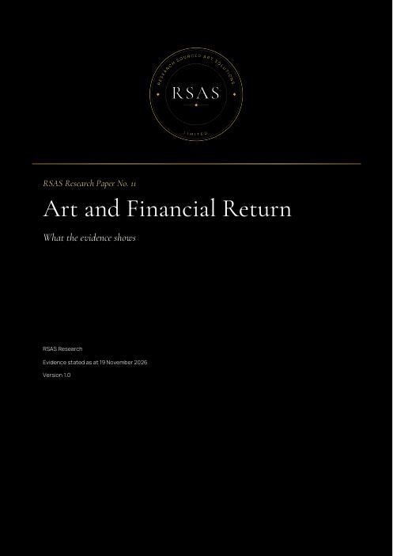
No. 11 · Value, pricing and markets · 14 pagesArt and Financial Return
What the evidence shows
Is art a good investment? This paper sets popular claims against the academic evidence, from William Baumol’s 1986 study to recent work on selection bias and on the collection of John Maynard Keynes. Long-run studies estimate real returns of roughly 0.5 to 5 per cent a year before costs, and correcting for the tendency of successful works to be resold lowers measured returns further. The paper explains why averages mislead: a few works drive most gains, auction fees can require a large rise in price simply to break even, and indices omit private sales and cannot be bought. The financial case for art is weaker than headline figures suggest.
 No. 12 · Value, pricing and markets · 14 pages
No. 12 · Value, pricing and markets · 14 pagesMarket Cycles and Institutional Validation
How booms, busts and institutional recognition shape the market for art
Two forces shape the market for any artist: the cycle of the art market as a whole and the judgements of museums, curators, biennales and prize juries. This paper traces the major contractions of the past thirty-five years, from the 62 per cent fall in auction sales in 1991 to the declines of 2023 and 2024, and links them to equity markets, wealth and speculation. It then examines institutional validation, showing that early museum recognition shapes careers for decades but that exhibitions often have their effect on prices before they open. Timing, venue and the supply of work all matter.
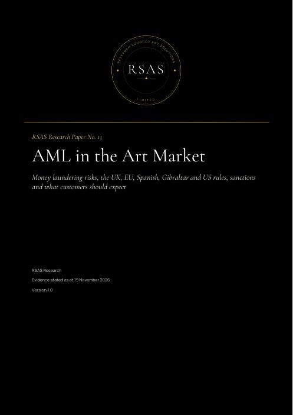
No. 13 · Law, regulation and tax · 10 pagesAML in the Art Market
Money laundering risks, the UK, EU, Spanish, Gibraltar and US rules, sanctions and what customers should expect
High values, portable assets and a tradition of discretion make art attractive to those seeking to launder money or evade sanctions. This paper explains how anti-money laundering rules now apply to the art trade. In the United Kingdom, dealers and intermediaries handling transactions of £10,000 or more must register with HMRC, check their customers and report suspicions and sanctions breaches. It also covers Spain, the new EU regulation that will apply from July 2027, Gibraltar’s parallel regime and the different position in the United States. For buyers and sellers, identity and source-of-funds checks are now a legal requirement, not a courtesy.
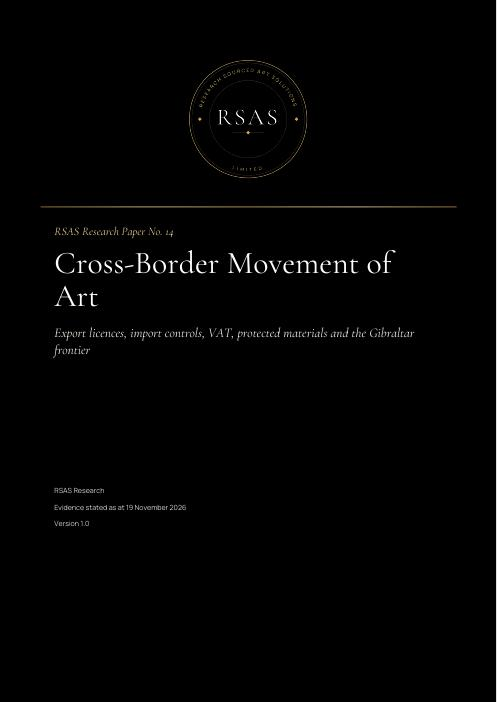
No. 14 · Law, regulation and tax · 11 pagesCross-Border Movement of Art
Export licences, import controls, VAT, protected materials and the Gibraltar frontier
Works of art cross borders constantly, for sale, exhibition or a move of home, and each journey can engage export licences, import rules and taxes. This paper explains the main requirements for moving art between the United Kingdom, the European Union and beyond, with particular attention to Spain and Gibraltar. It covers UK export licensing and the delay for national treasures, the EU licensing system and its new import controls from June 2025, Spain’s permit for objects over 100 years old, import VAT, temporary admission and the UK ivory ban. The lesson is to plan ahead, obtain licences before shipping and keep every document.
 No. 15 · Law, regulation and tax · 10 pages
No. 15 · Law, regulation and tax · 10 pagesFreeports and Bonded Storage
How they work, the main facilities, the cases that shaped regulation and the UK options
Freeports and bonded warehouses allow works of art to be stored without paying import duties and VAT until they enter a domestic market. This paper explains how these facilities work and describes the leading art freeports in Geneva, Luxembourg and Singapore. It reviews the cases that brought them under scrutiny, from the Bouvier and Rybolovlev dispute to the Modigliani seized after the Panama Papers, and sets out how regulation has tightened, including anti-money laundering rules for freeport operators and, from 2027, EU customs warehouses. It also explains the UK alternatives and why transparency about ownership is now expected.
 No. 16 · Law, regulation and tax · 10 pages
No. 16 · Law, regulation and tax · 10 pagesArtist’s Resale Right and Intellectual Property
Resale royalties, copyright and moral rights: what buyers and sellers need to know
Buying a painting means buying the object, not the rights in it. This paper explains what owners need to know about the artist’s resale right, the royalty paid to artists and their heirs when a work is resold through the art market, in the United Kingdom, the European Union and Spain, and its position in Gibraltar and the United States. It sets out the rates, thresholds and cap, who pays and who collects, and an enforcement case against a London dealer. It then explains how copyright and moral rights affect an owner who wants to photograph, publish, lend or sell a work.
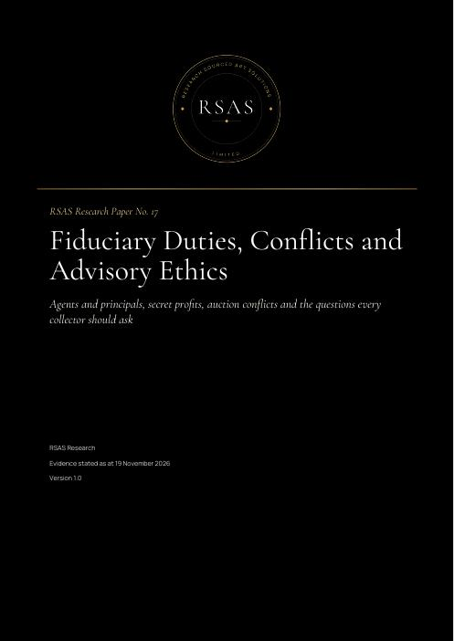
No. 17 · Law, regulation and tax · 10 pagesFiduciary Duties, Conflicts and Advisory Ethics
Agents and principals, secret profits, auction conflicts and the questions every collector should ask
Most collectors buy and sell through dealers, auction houses and advisers, but whether those intermediaries owe strict duties of loyalty depends on whether they act as agents or on their own account. This paper explains fiduciary duties under English law, including the duty not to make a secret profit, through leading cases such as Accidia v Dickinson over a Leonardo drawing and a New York dispute over a Basquiat. It examines the conflicts built into auctions, including guarantees and irrevocable bids, the Philbrick fraud and the market’s voluntary codes. The lesson is to agree in writing at the outset how an intermediary acts and is paid.
 No. 18 · Law, regulation and tax · 11 pages
No. 18 · Law, regulation and tax · 11 pagesEstate Planning and Art Succession
Inheritance tax, heritage reliefs and cross-border succession for collectors in the UK, Spain and Gibraltar
A collection built over a lifetime can be broken up in months without a plan. This paper explains the main succession rules for collectors with links to the United Kingdom, Spain and Gibraltar. It covers UK inheritance tax and the move to a residence-based system in April 2025, lifetime gifts, and the heritage schemes of conditional exemption, Acceptance in Lieu and the Cultural Gifts Scheme. It then explains the EU Succession Regulation, Spanish forced heirship and inheritance tax, Andalucía’s family relief and Gibraltar’s absence of inheritance tax. It stresses up-to-date inventories, wills that work in each country and early planning.
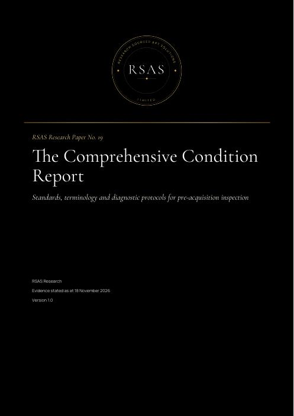
No. 19 · Condition, care and risk · 25 pagesThe Comprehensive Condition Report
Standards, terminology and diagnostic protocols for pre-acquisition inspection
A condition report may be only a page or two, yet it can be one of the most important documents in a purchase. It affects price, terms of sale, future care, insurance and the owner’s position if damage is later disputed. This paper argues that “good condition” is too vague to rely on and recommends assessing appearance, stability and how much of the original survives as separate questions. It explains why every report should state its scope and limits, why no single technique is enough and how a free condition note differs from an independent report. It offers a three-tier inspection model and a model report outline.
 No. 20 · Condition, care and risk · 14 pages
No. 20 · Condition, care and risk · 14 pagesWorks on Paper and Graphic Media
Care, display, framing and condition of drawings, watercolours, pastels and prints
Drawings, watercolours, pastels and prints are among the most rewarding works to own and among the most vulnerable. Light, humidity, heat, acidic materials, pests and handling can all cause damage that cannot be undone. Drawing on guidance from the Canadian Conservation Institute, the Library of Congress, the National Trust and others, this paper sets out the essentials of care: low light with ultraviolet excluded, limited display, moderate and stable humidity, acid-free mounting and minimal handling. It describes common problems from fading and foxing to mat burn, explains what to check before buying and closes with a care checklist for owners.
No. 21 · Condition, care and risk · 12 pagesModern and Contemporary Materials
Acrylics, plastics, photographs, media and the question of replacement
Modern artists use materials that traditional conservation was never designed for: acrylics, plastics and foams, colour photographs and digital prints, video and electronic equipment, and deliberately short-lived matter. This paper explains how these materials age, identifies the four plastics most at risk in collections and shows why colour photographs can fade even in the dark. It explains that time-based media depend on equipment that will become obsolete, and that in conceptual and installation art the certificate and the artist’s instructions may matter as much as the object. It closes with the questions to ask before acquiring a modern or contemporary work.
 No. 22 · Condition, care and risk · 11 pages
No. 22 · Condition, care and risk · 11 pagesEnvironmental Control in Coastal Homes
Humidity, salt, light and climate control for collections by the sea
Many collectors keep art in homes by the sea, where high and changeable humidity, salt air, strong sun and long closed periods all pose risks. This paper summarises what conservation guidance says about each. It explains why damp is the main threat, with mould likely within days at high humidity, how sea salt accelerates corrosion of metals, and why air conditioning switched on and off can crack paint and distort panels. The practical measures are well established: keep relative humidity between about 40 and 60 per cent, avoid sudden changes, keep works out of direct sun and monitor conditions. It closes with a checklist for owners.
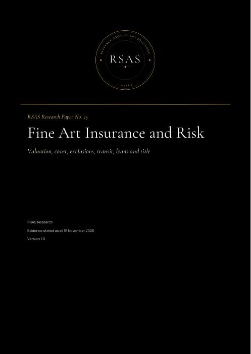
No. 23 · Condition, care and risk · 11 pagesFine Art Insurance and Risk
Valuation, cover, exclusions, transit, loans and title
Many collections are insured on the wrong terms or for the wrong amounts. Ordinary home contents policies often cap what they pay for a single item far below the value of a serious work. This paper explains how specialist fine art policies work, including all-risks cover and agreed value, and why valuations must be kept up to date. It sets out the usual exclusions, such as gradual deterioration, inherent vice and damage during restoration, notes that industry figures suggest half or more of claims arise in transit and handling, and explains how title risk is handled separately. It closes with practical lessons and a checklist.
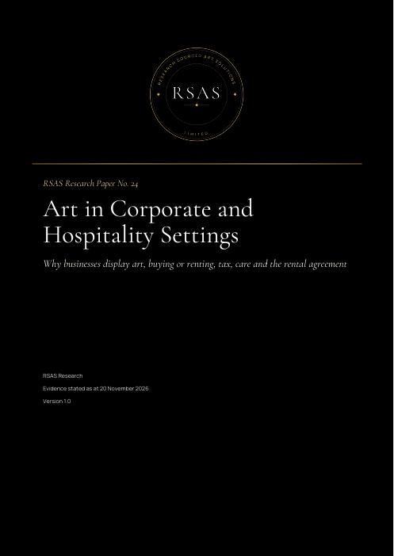
No. 24 · Collecting in practice · 10 pagesArt in Corporate and Hospitality Settings
Why businesses display art, buying or renting, tax, care and the rental agreement
Art hangs in boardrooms, banks, hotel lobbies, restaurants and private clubs, where it can express identity, impress clients and improve working spaces. This paper examines why businesses display art, what research says about its effect on people at work, and how leading corporate collections and art-led hotels use it. It explains renting art as an alternative to buying, how rental differs from leasing and finance, and the UK tax treatment of each. It also covers the particular risks of busy buildings, from crowds and cleaning to light and heat, and the insurance, security and contractual points every business should address.
 No. 25 · Provenance, authenticity and attribution · 10 pages
No. 25 · Provenance, authenticity and attribution · 10 pagesChagall’s Works on Paper
Etchings, lithographs and unique works: documentation, authentication, fakes and the market
Marc Chagall is one of the most widely collected artists on paper, and one of the most faked and misdescribed. This paper describes his main bodies of work on paper, from the etchings for Ambroise Vollard to the colour lithographs printed at Mourlot, and the catalogues raisonnés that record them. It explains the crucial difference between prints by Chagall and lithographs made after his work by Charles Sorlier, the role of the Comité Marc Chagall in authenticating unique works and destroying fakes, and the court cases over fake prints. Buyers should rely on catalogue numbers and certificates, not signatures alone.
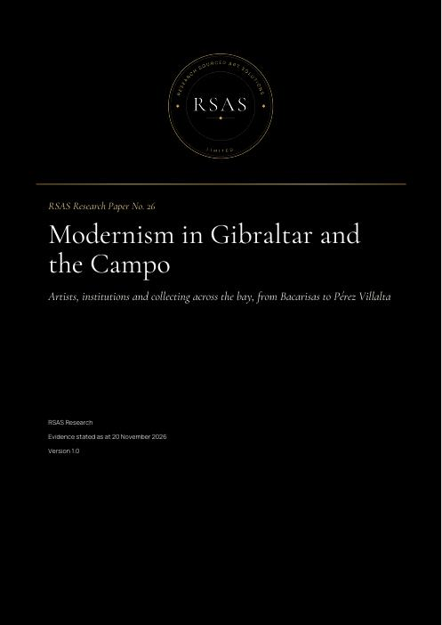
No. 26 · Collecting in practice · 9 pagesModernism in Gibraltar and the Campo
Artists, institutions and collecting across the bay, from Bacarisas to Pérez Villalta
Gibraltar and the Spanish towns around the bay produced a remarkable group of modern artists whose careers crossed the frontier and the Strait. This paper introduces Gustavo Bacarisas, the Gibraltarian who designed the poster for Seville’s 1929 Ibero-American Exposition; the heritage artists of the Mario Finlayson National Art Gallery; José Cruz Herrera of La Línea; the sculptor Luis Ortega Brú of San Roque; and Guillermo Pérez Villalta of Tarifa. It describes the National Gallery and the Gibraltar International Art Exhibition, and sets out what collectors should know about provenance, documentation, liquidity and conservation in a largely local market.
 No. 27 · Value, pricing and markets · 9 pages
No. 27 · Value, pricing and markets · 9 pagesFrom Subculture to Market
How graffiti, outsider art and comics found their way to galleries, museums and auction
Some of the most valuable art of the last fifty years began far from the art world: on subway trains and city walls, in psychiatric hospitals and isolated homes, and in comics and streetwear. This paper traces how graffiti and street art, outsider and self-taught art, and comic and toy-related art reached galleries, museums and auction rooms, from 1980s New York and Jean Dubuffet’s art brut to Banksy, Bill Traylor, Hergé and KAWS. It then sets out the risks for collectors: authentication controlled by a single body, works removed from walls without clear ownership, intellectual property disputes, large print editions and hype-driven prices.
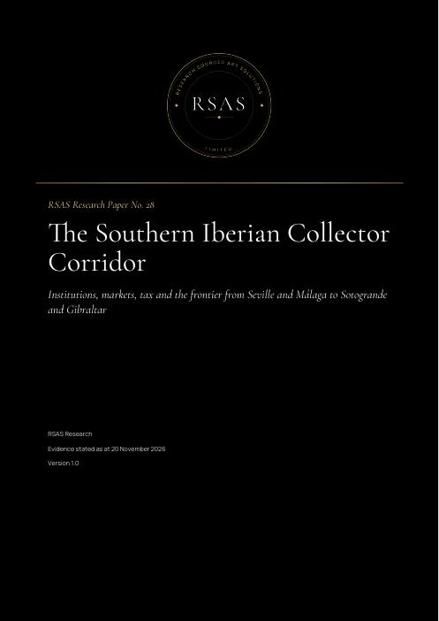
No. 28 · Collecting in practice · 8 pagesThe Southern Iberian Collector Corridor
Institutions, markets, tax and the frontier from Seville and Málaga to Sotogrande and Gibraltar
From Seville through Málaga and Marbella to Sotogrande and Gibraltar, southern Spain has become one of Europe’s most interesting regions for private collectors. This paper describes its institutions, from Seville’s historic collections to Málaga’s Picasso, Carmen Thyssen and Centre Pompidou museums, Marbella’s print museum and fairs, and Gibraltar’s own gallery. It then sets out the rules collectors most need to know: Spanish VAT on art, Andalucía’s wealth tax relief, Spanish export licences, and the EU and UK treaty on Gibraltar, which since 15 July 2026 has introduced a transaction tax with a reduced 5 per cent rate for works of art.
 No. 29 · Collecting in practice · 8 pages
No. 29 · Collecting in practice · 8 pagesPost-War and Contemporary Sculpture and Multiples
Casts, editions, posthumous bronzes and multiples: originality, authentication, the market and care
In sculpture, “original” often means one of several. A bronze may exist in eight identical casts, a cast made after the artist’s death may still be authorised, and a multiple in an edition of a hundred may be a serious work by a major artist. This paper explains the European rule of eight, the Musée Rodin’s posthumous editions, and the multiples of Daniel Spoerri’s Edition MAT and Joseph Beuys. It reviews record prices for Giacometti, Koons and Bourgeois, the lessons of the Mainz Giacometti fakes case, and the practical demands of owning sculpture, especially outdoors and near the sea.
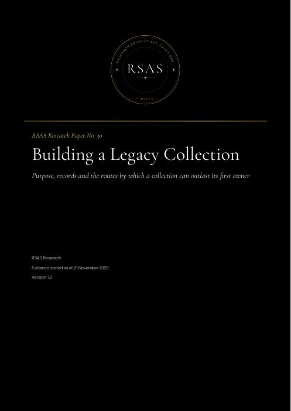
No. 30 · Collecting in practice · 7 pagesBuilding a Legacy Collection
Purpose, records and the routes by which a collection can outlast its first owner
Many private collections are dispersed soon after their creator’s death. This final paper in the RSAS series explains how to build a collection that can last: give it a clear purpose, document it to museum standards and plan its future in good time. It compares the main routes to a legacy: keeping the collection in the family, selling it for a philanthropic purpose as the Paul G. Allen estate did, giving works to public collections through the UK’s Cultural Gifts and Acceptance in Lieu schemes or Spain’s patronage incentives, and founding a private museum. It closes with practical first steps any collector can take.